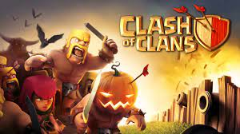

CLASH OF CLANS

Clash of Clans is a management RTS. Here, you'll find a village where the members of your fearless clan reside. Then, you get to send them out into the world to face missions and prove their courage while destroying enemy camps .Divided into two completely different stages, you start out by building structures and hiring citizens (yup, you have to pay them). Later on, you get the chance to participate in real-time strategy battles where you can show off your skills. With ten different types of units, you can build up your strategy by gaining experience and money. Defense systems must also be developed for your city and are vital if you expect to withstand the brutality of oncoming enemy attacks. Given its viral success, Clash of Clans is obviously a very entertaining game with classic management strategy gameplay that's far more unique than might initially be guessed. Plus, it's completely free and totally optimized for Android The game is set in a fantasy-themed persistent world where the player is a chief of a village. Clash of Clans tasks players to build their own village using the resources gained from attacking other player's villages with troops; earning rewards, buying them with medals or by producing them at their own village. The main resources are gold, elixir and dark elixir. Players can conjoin to create clans, groups of up to fifty people, who can then participate in Clan Wars together, donate and receive troops, and chat with each other. The minimum number of players of a Clan War is thirty. Clash of Clans is an online multiplayer game in which players form communities called clans, train troops, and attack other players to earn resources. There are four currencies or resources in the game. Gold and elixir can be used to build and upgrade defenses and traps that protect the player's village from other players' attacks and to build and upgrade buildings. Elixir and dark elixir are also used to upgrade troops and spells. In past, they were also used to train the troops but now training is free. Gems are the premium currency. Attacks are rated on a three-star scale and have a maximum timed length of three minutes. Clans are groups of players who join to support each other, either materially (donating troops) or verbally (giving advice). Players can join clans once they rebuild the special Clan Castle building early on. A major component of the gameplay of Clash of Clans is clans facing off against one another in the "clan wars". Clan leaders and co-leaders can begin wars against other clans. Each clan is then given one "preparation day" and one "war day." When a player attacks a member of the opposing clan, they receive stars based upon the amount of destruction they cause to the opponent's base, 50% damage or more gives 1 star, destroying the townhall also gives 1 star and destroying the entire base gives the remaining third star. Each player is limited to two attacks per war and the team with the most stars at the end of the war day is declared victorious. If the two clans' number of stars are equal, then the victor is the one that has a greater percent of destruction. Players receive bonus war loot if they use their attacks in the war. This loot may be different on different bases and is decided by Supercell; the top base has the most war bonus loot and the last base has the least amount of bonus loot. If the clan wins the war, the bonus loot is fully delivered to the player but during a loss or draw one-third of the loot is delivered to the player.
Download link :- https://play.google.com/store/apps/details?id=com.supercell.clashofclans
Home
previous page
Next page